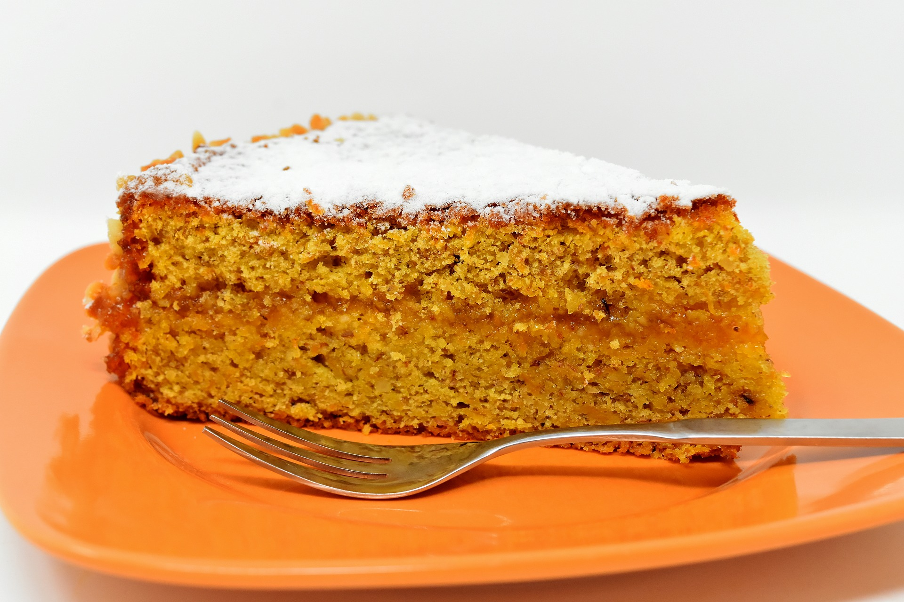

Receita bolo de Cenoura

Ingredientes
- 3 ovos
- 1/2 xícara (chá) de óleo
- 1 colher (sopa) de fermento em pó
- 2 xícaras (chá) de açucar
- 2 xícaras (chá) de farinha de trigo
- 3 1/2 xícara (chá) de cenouras médias raladas
Cobertura
- 1 colher (sopa) de manteiga
- 3 colheres (sopa) de chocolate em pó ou Nescau
- 1 xícaras (chá) de açucar
- Se desejar cobertura molinha coloque 5 colheres (sopa) de leite